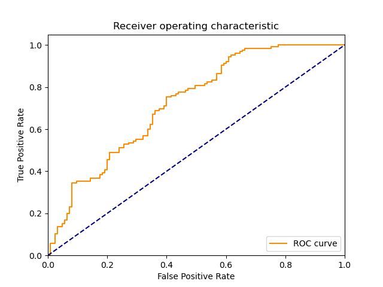

| 8 |
MLP |
Multi-layer Perceptron classifier. |
0.640599 |
0.000000 |
106 |
82 |
43 |
19 |
0.848 |
0.656 |
0.711409 |
0.752 |
0.248 |
0.773723 |
1.086828 |
1.207810 |
inf |
|
|
|
| 9 |
AdaBoostClassifier |
An AdaBoost classifier |
2.000050 |
0.078048 |
111 |
76 |
49 |
14 |
0.888 |
0.608 |
0.693750 |
0.748 |
0.252 |
0.778947 |
1.080074 |
0.389464 |
9.980334 |
|
|
|
| 6 |
NonLinearSVM |
Non Linear Support Vector Classification |
0.031199 |
0.000000 |
117 |
65 |
60 |
8 |
0.936 |
0.520 |
0.661017 |
0.728 |
0.272 |
0.774834 |
1.039566 |
24.835250 |
inf |
 |
 |
 |
| 7 |
LP |
Linear perceptron classifier |
0.000000 |
0.000000 |
100 |
82 |
43 |
25 |
0.800 |
0.656 |
0.699301 |
0.728 |
0.272 |
0.746269 |
1.029111 |
inf |
inf |
 |
 |
 |
| 2 |
BernoulliNBC |
Naive Bayes classifier for multivariate Bernoulli models |
0.000000 |
0.000000 |
109 |
61 |
64 |
16 |
0.872 |
0.488 |
0.630058 |
0.680 |
0.320 |
0.731544 |
0.945278 |
inf |
inf |
 |
 |
 |
| 4 |
KNeighborsClassifier |
Classifier implementing the k-nearest neighbors vote |
0.000000 |
0.031210 |
111 |
57 |
68 |
14 |
0.888 |
0.456 |
0.620112 |
0.672 |
0.328 |
0.730263 |
0.933621 |
inf |
23.398233 |
 |
|
|
| 1 |
RealBoost |
An RealBoost classifier |
6.937621 |
0.000000 |
102 |
61 |
64 |
23 |
0.816 |
0.488 |
0.614458 |
0.652 |
0.348 |
0.701031 |
0.894918 |
0.101048 |
inf |
 |
|
|
| 5 |
LinearSVM |
Linear Support Vector Classification |
0.062529 |
0.000000 |
106 |
54 |
71 |
19 |
0.848 |
0.432 |
0.598870 |
0.640 |
0.360 |
0.701987 |
0.880658 |
11.226563 |
inf |
|
|
 |
| 3 |
GaussianNBC |
Gaussian Naive Bayes (GaussianNB) |
0.000000 |
0.000000 |
108 |
30 |
95 |
17 |
0.864 |
0.240 |
0.532020 |
0.552 |
0.448 |
0.658537 |
0.771285 |
inf |
inf |
 |
 |
 |
| 0 |
DiscreteNBC |
DiscreteNBC |
0.109266 |
0.062495 |
60 |
61 |
64 |
65 |
0.480 |
0.488 |
0.483871 |
0.484 |
0.516 |
0.481928 |
0.628349 |
4.410609 |
7.711520 |
 |
 |
 |
{kind=link}
{kind=link}
{kind=link}
{kind=link}
{kind=link}
{kind=link}
{kind=link}
{kind=link}
{kind=link}
{kind=link}
{kind=link}
{kind=link}
{kind=link}